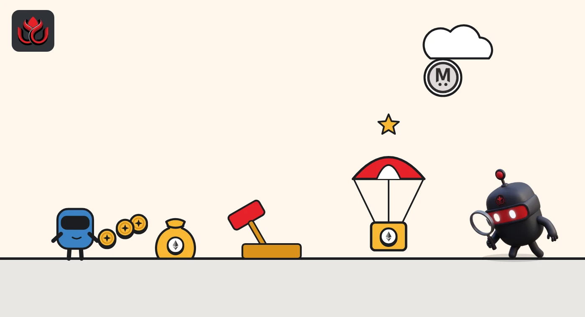
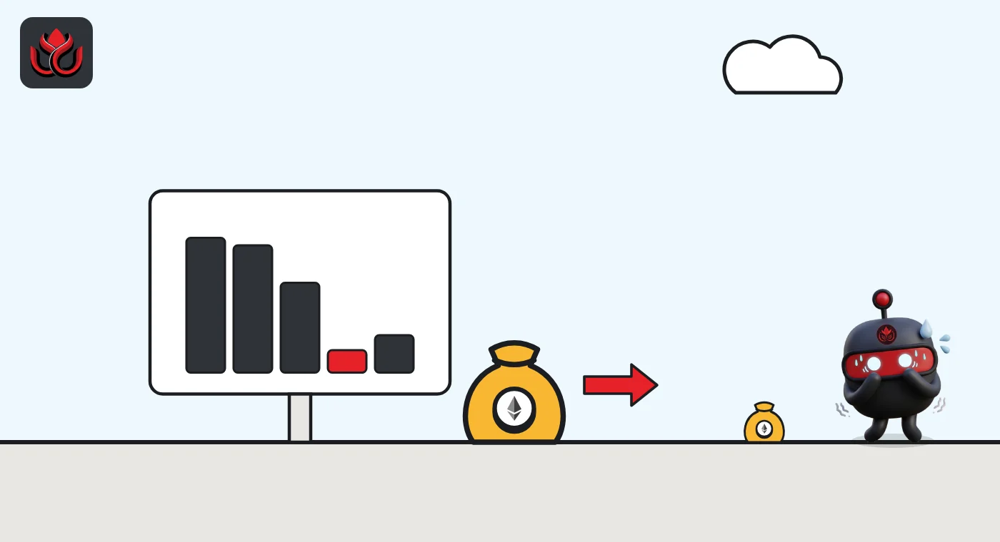

MegaETH's MEGA is down 73% since launch. Who really got the 15% 'community' share?
MegaETH launched MEGA on April 30, 2026, after hitting the first of four network milestones. At least a third of its 15% community allocation was sold at auction, MegaETH has not said how much was given away free, and 53% of supply still waits on future milestones.
Key points
- MEGA went live on April 30, 2026, one week after MegaETH hit its first launch milestone: 10 MegaMafia apps deployed on its mainnet.
- The 15% community allocation (1.5 billion of 10 billion MEGA) covers the Echo sale, the Fluffle NFT, the Sonar public auction and a Mainnet Campaign. MegaETH has not published how much was a free airdrop or how many wallets received it.
- CoinGecko's April 30 close was $0.1676; on November 2 MEGA traded at $0.04445, down about 73%, with 1.13 billion MEGA (11.3%) circulating.
What happened
MegaETH is an Ethereum layer 2, a faster network that settles its transactions on Ethereum. It markets itself as a "real-time" chain with 10-millisecond miniblocks. Its token, MEGA, went live on April 30, 2026.
The launch date was not set in advance. At mainnet, MegaETH promised to release MEGA only after the network hit one of four performance goals. On April 23, 2026, it reached the first: 10 apps from its MegaMafia builder program deployed on chain. That triggered the token launch one week later.
Many people call this the MegaETH airdrop. The project's own token page tells a more mixed story: a large part of the community allocation was sold, not handed out for free.
Where the 10 billion MEGA go
MegaETH's token page splits the 10 billion supply into five buckets. The biggest, 53%, is reserved for KPI rewards (KPI means key performance indicator, a measurable target). The community allocation is 15%, which equals 1.5 billion MEGA.
That 15% has four parts, per a footnote on the page: the Echo community sale, the Fluffle NFT, the Sonar public auction and a Mainnet Campaign. Two of them, Echo and Sonar, were sales, and the Sonar auction alone sold 5% of total supply, a third of the community bucket. MegaETH does not say how the rest of the 15% is split, and it says tokens left undelivered because of KYC (identity checks) or sybil filters go back to the Foundation.
At CoinGecko's April 30 close, the full community bucket was worth about $251 million on paper. The free share was a smaller, undisclosed part of that. MegaETH has not published how many wallets received MEGA from any round. Today, MegaETH's Blockscout explorer counts 10,469 holder addresses on its own chain, which is not the same as the number of recipients.
MEGA supply by allocation
% of 10 billion MEGA
Source: MegaETH token page

How MegaETH marketed it
MegaETH ran a long build-up of sales and community programs instead of a classic points season:
- Echo sale: everyday buyers got the same terms as the seed round. MegaETH calls it Echo's largest sale, raising $10 million. Buyers got 20% of their MEGA on April 30 and claim the rest on Echo.
- Fluffle NFT: a whitelist built from four personas drawn from on-chain history and community roles. Holders got 50% of their MEGA on April 30, with the rest vesting over six months.
- Sonar auction: a 72-hour auction for 5% of supply drew more than 50,000 bidders and $1.39 billion in commitments, per MegaETH.
- Events: after launch, MegaETH's MegaArcade night in Seoul on May 7 drew more than 200 attendees.
We could not confirm the size, rules or claim numbers of the Mainnet Campaign on a MegaETH source, so we leave them out.
What happened to the price
CoinGecko's price history shows a close of $0.1676 on April 30 and $0.1602 on May 1. By May 14 MEGA had slipped to $0.1050. CoinGecko lists an all-time low of $0.0301 on August 14, 2026.
On November 2 at 8:39 p.m. ET, CoinGecko showed MEGA at $0.04445, about 73% below the April 30 close. Its market value was about $50.2 million and its fully diluted value (the price times all 10 billion tokens) $444.5 million. Only 1.13 billion MEGA, or 11.3% of supply, were circulating.
MEGA price, CoinGecko daily close
US$
Source: CoinGecko historical data and CoinGecko MEGA page

Unlocks ahead and risks
This is a low-float token: about 89% of MEGA is not yet circulating. Several streams can add supply:
- KPI rewards (53%): released in tranches to holders who commit, or lock, MEGA in MegaETH's Flux program when the Foundation attests that a milestone was met. There is no calendar. The longer a holder stays committed, the bigger the share.
- Echo: the remaining 80% of Echo buyers' tokens vest on Echo's schedule.
- Sonar: buyers who accepted a lockup receive tokens on April 30, 2027.
- VC and team (25% combined): MegaETH's token page does not show their vesting dates.
MegaETH says the Foundation uses rewards from its USDm stablecoin to buy back MEGA, which works against new supply. It has not published buyback totals on the pages we checked.
Claim only through megaeth.com and the links on it. Fake claim sites copy every airdrop. Never connect a wallet from a link in a DM or a reply.
LC Insight analysis
This section is our reading of the facts above, not a statement of fact.
- We think the KPI trigger was a smart marketing tool but a weak price support. It created a clear countdown, yet the price fell for weeks after launch anyway, likely because buyers from cheaper rounds had tokens to sell.
- Calling a partly sold allocation 'community' blurs what users actually received. A clear split of the 15%, with wallet counts, would let farmers and buyers judge what their activity was worth.
- The 53% KPI pool is the biggest long-term factor. If milestones arrive faster than real usage grows, new supply could outrun the USDm-funded buybacks.
What's next
- The next KPI attestation and the size of its MEGA tranche
- Any MegaETH disclosure of Mainnet Campaign rewards and recipient counts
- Published MEGA buyback totals from USDm rewards
- Vesting dates for the VC and team allocations
Frequently asked questions
Was MEGA an airdrop?
Partly. MegaETH's 15% community allocation includes token sales (Echo, Sonar), the Fluffle NFT and a Mainnet Campaign. MegaETH has not said how much of it was free.
When did MEGA launch?
April 30, 2026, one week after MegaETH hit its first launch milestone of 10 MegaMafia apps on mainnet.
How much MEGA is still locked?
About 89%. CoinGecko shows 1.13 billion of 10 billion MEGA circulating. The largest locked block is 53% for KPI rewards.
How do KPI rewards work?
Holders lock MEGA in MegaETH's Flux program. When the Foundation attests that a milestone was hit, a set amount of MEGA is shared among them, weighted by how long they have been committed.
Disclaimer. This article is based on public information and the sources listed below as of the update time shown. It is for information only and is not investment, legal or tax advice. Figures may change as companies and authorities publish new data.
Sources
- MegaETH, MEGA token page (checked November 2, 2026)
- MegaETH blog, $MEGA is Live (April 30, 2026)
- MegaETH blog, The Fluffle (January 24, 2025)
- MegaETH blog, MegaArcade lands in Seoul (May 8, 2026)
- MegaETH Blockscout, MEGA token (checked November 2, 2026)
- CoinGecko, MegaETH (MEGA) price page (checked November 2, 2026)
- CoinGecko, MEGA historical data April 28 to May 14, 2026